Cada bloque muestra cómo se vería la portada con un estilo distinto, usando las cartas reales de los mazos. Elige una (o dime qué mezclarías) y rehago el sitio completo con ese estilo.
Sala de museo: pared color vino, marcos dorados y fichas de colección. Lujoso y sobrio.
Lee el tarot con obras de 1491, 1701 y 1909, completas y con sus 78 cartas originales.
Comenzar mi lectura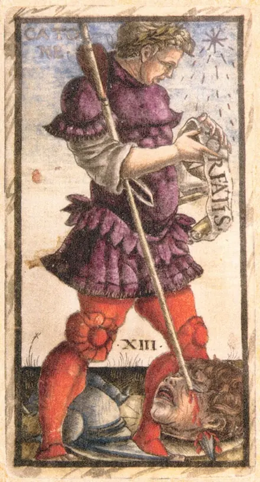
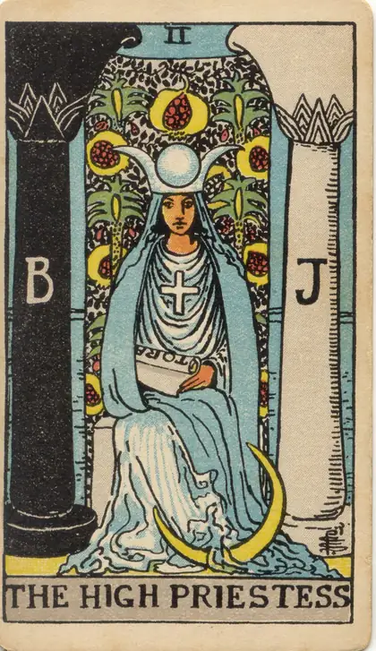
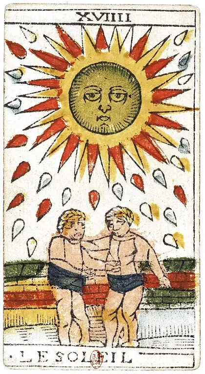
Cartel de taller del 1700: papel, tinta negra y los cuatro colores planos del grabado en madera.
Tarot para leer con las propias manos
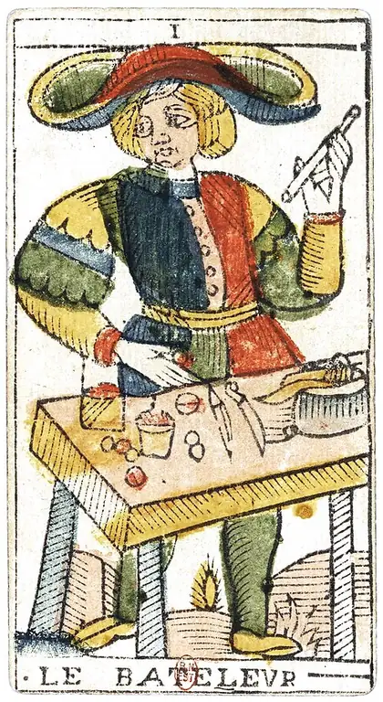
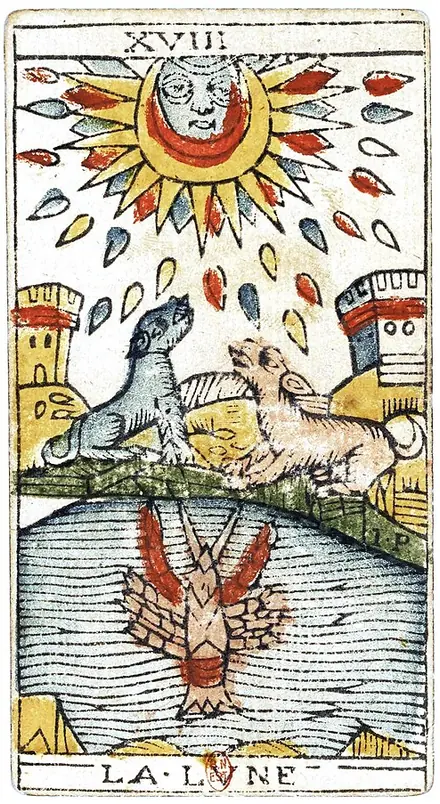
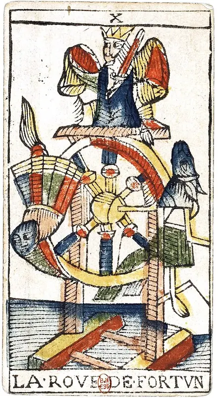
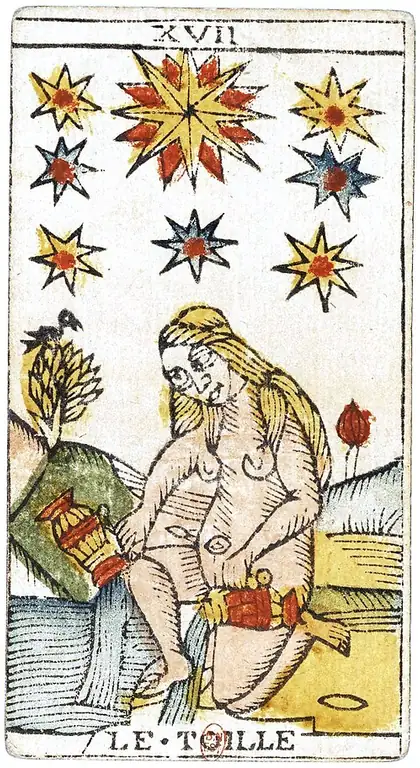
Baraja las 78 cartas, escoge las tuyas y lee lo que cuentan. Tres mazos históricos, impresos entre 1491 y 1909, tal como salieron del taller.
Barajar el mazoCarta astronómica: cielo nocturno, un astrolabio dorado que gira y las cartas flotando al centro.
Descubre lo que pueden inspirar en la tuya, con tres mazos históricos de 78 cartas.
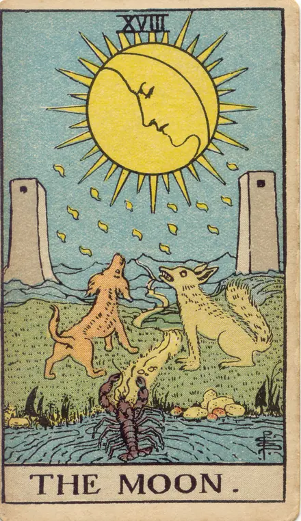
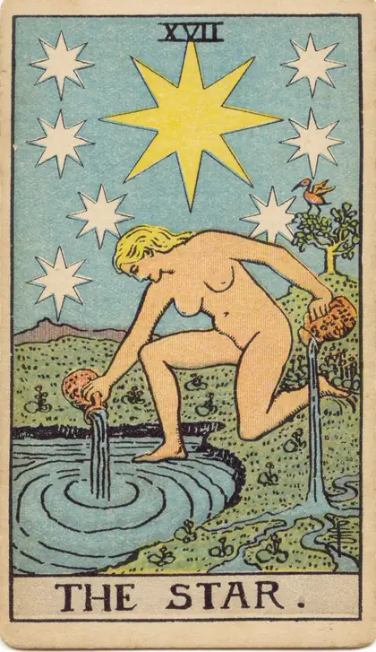
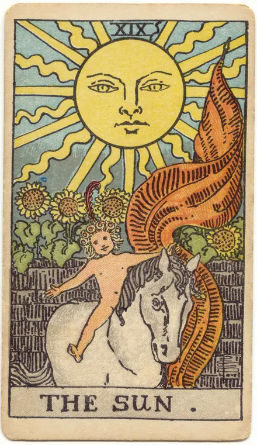
Contemporáneo y juguetón: color fuerte, letras enormes y las cartas como pegatinas.
Tarot de verdad, con mazos de hace cinco siglos. Gratis, sin cuenta y en dos minutos.
Sacar mi carta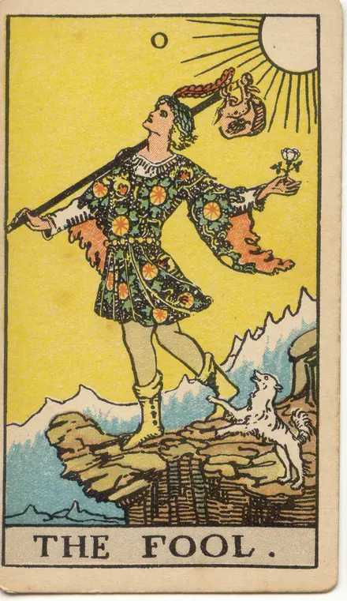
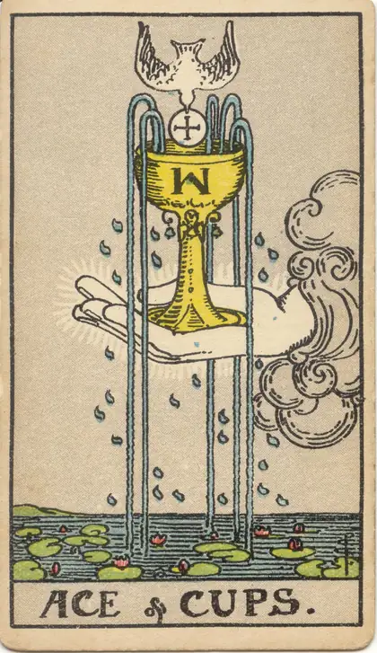
Las cuatro usan las mismas cartas y el mismo flujo de lectura; solo cambia la personalidad visual.